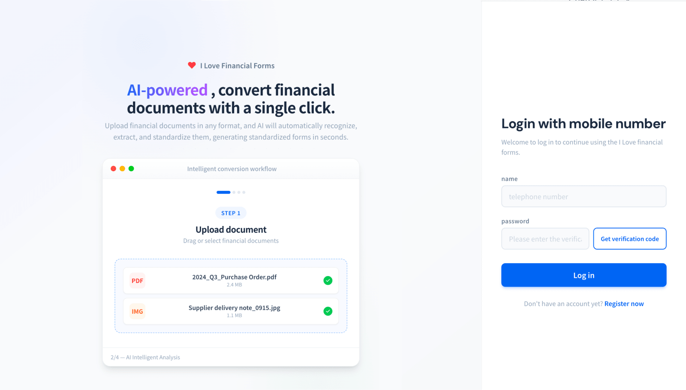
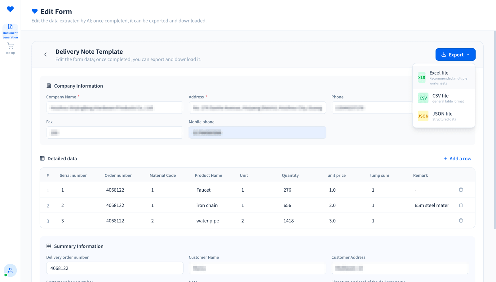
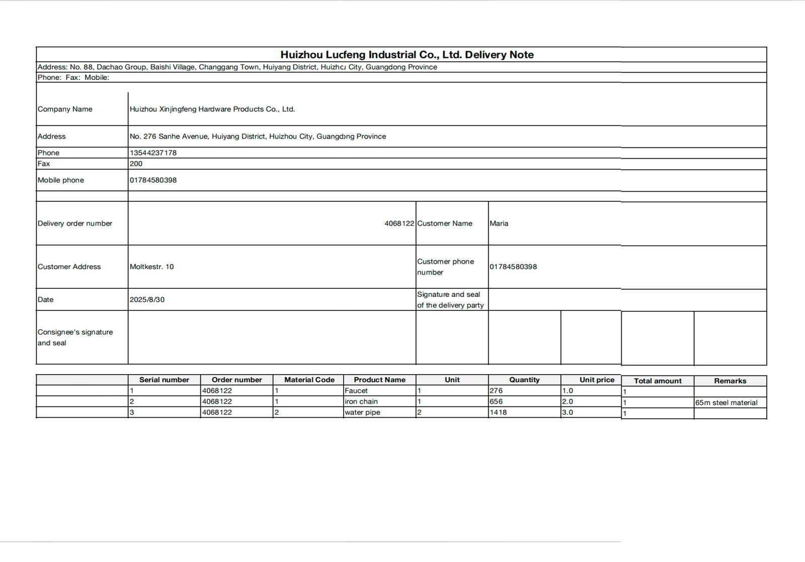

Work/I Love Financial Forms · rebuilding the enterprise financial-form experience with an AI Agent
Overview
I Love Financial Forms · rebuilding the enterprise financial-form experience with an AI Agent
An AI finance workspace that intelligently converts messy financial documents (PDFs, images, scanned forms) into clean, editable spreadsheets. The entire interaction is built around one model: trust the AI, but verify before you export. Watch the agent think — then you sign off.
Details
Services:Product Design, UX Research, Front- and Back-end MVP
Project Type:B2B AI Workspace
Categories:AI, Finance
Year:2025
2025.01 – 2025.06Product manager and designer: the end-to-end experience + hands-on in building the front- and back-end MVP.
Location:US AI tech company
Key Decision 01Dual-track input: ⚡ Smart Convert for novices, custom templates for experts
Key Decision 03Edit Form checkpoint keeps the human in control before export
Results / MeasuredRe-keying one document by hand: 5–10 min (per client interviews); the agent, measured: ~20 s to parse, ~40 s to Excel (production, 2026.07)
Deployed for real (client private environments)0→1Agent workflowVibe coding · Next.js + FastAPI
01 Problem
The “manual hell” of traditional finance
Before diving into design, I did the homework: research and outreach with 50+ businesses, plus in-depth interviews with 5 core clients. The pain points surfaced quickly:
No ERP, high labor cost: SMBs generally lack large ERP systems, so finance teams manually re-key delivery notes, statements and quotes into Excel 20–50 times every day.
Near-zero tolerance for error: one wrong number cascades, and one typo can mean hours of manual reconciliation.
The technology gap: traditional OCR outputs unstructured text with no logic; generic chatbots forget the format every turn and can’t sustain a stable workflow.
The real job: “Put this messy PDF into the exact same Excel template my company is already using.” — no existing tool delivers this.

Upload a document → the agent detects the file type and recommends a processing flow.
02 AI-native personal workflow
How I delivered this project
I dropped the traditional “all by hand” design pipeline and used an AI-collaborative workflow to multiply R&D and design efficiency:
Competitive research and content generation (ChatGPT / Claude Design): used large models to dissect the experience gaps between traditional OCR and generic chatbots, and quickly generated realistic synthetic payloads and copy fit for finance-compliance scenarios.
Prototype generation (Figma Make): natural-language and component-library coupling produced multiple interaction-layout variants, dramatically shortening the PoC cycle.
Code delivery and design review (Cursor / Gemini): as a designer, I drove the front-end (Next.js) and agent back-end (FastAPI) code directly, using Gemini for code review and design-fidelity audits.
03 Agent strategy
Why this is a strong AI Agent product
To meet finance teams’ need for “100% accuracy”, I reshaped a one-shot input-output AI tool into an Agentic Workflow: multi-layer understanding, confidence scoring and automatic fallbacks, answering the four core elements of agent design in complex business contexts.
1 Dual-track input
“⚡ Smart Convert” for novices, “custom templates” for experts
Novice path: no template selection needed — the agent auto-detects the file type and recommends a flow. Expert path: upload a screenshot of the company’s form and define high-precision spatial parsing rules; one screenshot, a template configured in under 30 seconds.
2 Visible reasoning
Dynamic capability tags + three layers of readability
No cold spinner during the agent’s 30-second run: “Analyzing headers… Extracting amounts… Matching suppliers…” makes the reasoning visible; at template confirmation, a green quality card (confidence), a table-grid preview and field tags grouped by type make everything readable at a glance.
3 Human-in-the-loop
Edit Form checkpoint: control goes back to the human before export
After extraction, users land on a three-section editing page split by semantics (company info, line-item data, summary), with manual corrections, row additions and deletions all supported. This “one second of friction” eliminates the fear of AI auto-exporting wrong data.
LLM hallucination: fabricates addresses and phone numbers when fields are missing
Temperature 0 + a prompt with a self-check list, forcing “leave it blank if unsure”
Blank over guess: an honest blank earns far more long-term trust from finance users than a polished lie
Single point of failure: relying on one LLM vendor
Pluggable back end: one environment variable switches between Claude / OpenAI / local PaddleOCR
Security and business continuity are the floor any enterprise-grade Agent product must hold
Security and privacy: sensitive financial data
All AI calls are routed through backend proxy endpoints; the front end is never allowed to hit the API directly
Security is a default, not a marketing gimmick

Custom template · spatial parsing rules.

Result · editable table.
05 Shipped means debugged
A “silent success”
In July 2026 I caught a bug of my own making: after Smart Convert succeeded, the interface gave no feedback at all — the Excel file downloaded, but users thought it had failed. I added a success panel the same day. Lesson: in an AI product, an unannounced success looks exactly like a failure.
06 Next steps
Diff view and batch mode
Diff comparison view: when the same file is parsed again, highlight what changed in the agent’s extraction, with one-click accept / reject per field.
Multi-document batch mode: run multiple agent instances concurrently to process documents in batches, aggregating the output into one structured master table.